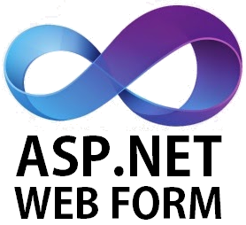
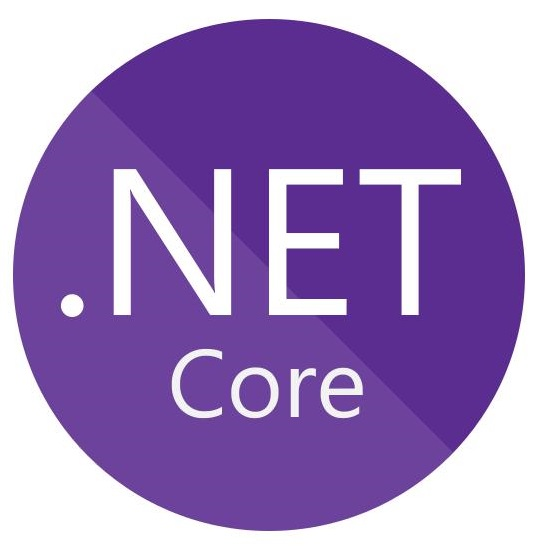
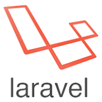
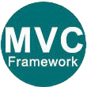
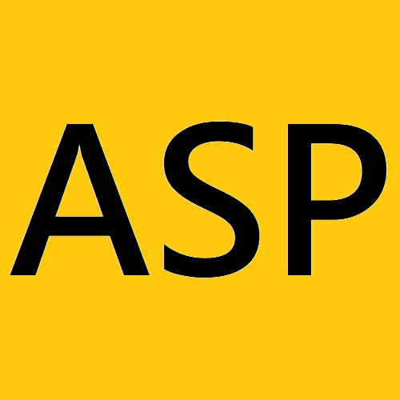
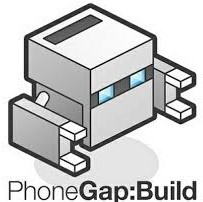
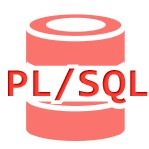
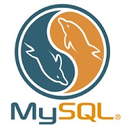
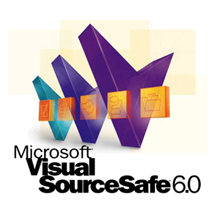

許紫婷 | ||
| Email：donna41827@gmail.com | ||
| 居住地：台北內湖 | ||
| 生日：81.04.18 | ||
| 專長：ASP.NET C# / MSSQL / Oracle / JavaScript | ||
| 學歷：靜宜大學碩士畢業 | ||
關於我
我是熱情、有衝勁、有毅力的牡羊座，我喜歡小動物，家裡有養一隻貓，平常喜歡上網、彈烏克麗麗。我做事認真負責、學習意願佳、抗壓性強，指派給我的事情我都會盡力做到最好。
期許未來工作能夠跳脫舒適圈，有更多實務經驗，與團隊一同進步，提升專業能力寫出更優雅簡潔，有彈性且利於維護的程式碼。
技能
網頁開發
ASP.NET WebForm
2年ERP系統實作與維護功能工作經驗。
ASP.NET MVC
SkillTree、恆逸上課經驗，能實作基礎功能，但未有實際工作經驗。
ASP.NET Core
自己練習時使用過，但未有實際工作經驗。
 Java SpringBoot
Java SpringBoot
有實做過簡單範例CRUD功能，資料撈取API。
Laravel
了解基礎架構，跟著書本範例實作過部分範例。
MVC
了解基礎概念，有實作過簡單CRUD範例。(ASP.NET MVC、Laraval、Java SpringBoot)
HTML5
能利用HTML5開發網頁，在學期間有使用HTML5 Canvas開發遊戲的經驗。
JavaScript
熟悉基本語法與使用者互動功能開發，有使用JavaScript開發網頁互動功能的經驗。
CSS
了解CSS基礎語法與常用功能，具備基礎開發能力與RWD觀念，有撰寫過RWD網頁經驗。
RWD
具備RWD觀念，有搭配RWD觀念使用CSS與Bootstrap開發網頁經驗。
Bootstrap
有使用Bootstrap開發網站經驗，了解Bootstrap基本工具與Grid切版系統。
PHP
能看懂基礎語法，有協助朋友進行網站錯誤修復經驗。
ASP
有3年ERP、POS網站系統功能開發與維運經驗。
PhoneGap
大學時期專題開發之網頁遊戲有使用PhoneGap轉移至iPad上供玩家使用之經驗，了解網頁操作與觸控操作間的差異，並修正程式使其相容。
 AppScript
AppScript
使用過GoogleAppScript結合Google表單與試算表開發過訂便當用的小工具。
資料庫
 關聯式資料庫
關聯式資料庫
在學期間學習關聯式資料庫的課程，具備基礎關聯式資料庫設計的概念，如pk/fk的概念、如何設計表格欄位以及應避免的問題、如何繪製ER-Model等。
Oracle
熟悉Oracle SQL基本語法。有3年相關工作經驗。
PL/SQL
熟悉PL/SQL語法。有3年相關工作經驗。
MySQL
了解基本語法與操作，但無相關工作經驗。
 MSSQL
MSSQL
熟悉MSSQL語法，有2年工作經驗。
版本控制
GIT
了解使用方式與基本語法。
SourceSafe
2年工作使用經驗。
圖文編輯軟體
 Photoshop
Photoshop
 Flash
Flash
 Word
Word
 PPT
PPT
 Excel
Excel
語文能力
中文
中文為母語，具備良好聽說讀寫之能力。
台語
能聽、說簡單的台語。
英語
具備基礎文法與閱讀能力。
經歷
- 格上租車-系統工程師 (2年)
- 在職期間：2019/05-2021/03
- 負責業務：企業車輛租賃系統ERP維運與需求開發，接觸模組包含客戶資料、試算利率、徵信、車輛採購、報表分析、合約列印。
- 使用技術：ASP.NET WebForm C#、MSSQL
- 工作內容
- 系統維運：負責處理系統操作、資料異常、系統Bug等問題
- 功能開發：與客戶洽談需求、負責模組需求功能開發。
- 宏誌科技-系統工程師 (3年)
- 在職期間：2015/10-2018/10
- 公司業務：百貨公司前台POS與後台ERP系統、會員系統、超市進銷存系統。
- 代表客戶：新光三越、京站。
- 所屬部門：百貨公司後台ERP系統維運與開發部門。
- 使用技術：ASP、Oracle、PL/SQL
- 工作內容
- 系統維運：負責範圍包含前後台資料串接、電文串接、客戶問題資料處理、電子發票上送問題、外部資料串接(信用卡/悠遊卡/一卡通交易資料)。
- 功能開發：客戶需求報表開發、發票格式調整、新增電文串接規格、功能調整上線、發票取號功能、電子發票上線、新增外部資料串接。
- 內部教育訓練：開發邏輯說明、新進人員指導。
作品集